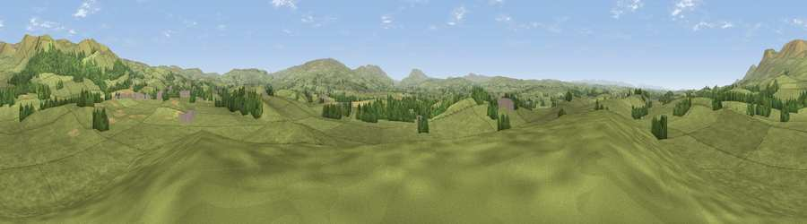

Viewpoint near Great Musgrave
#21122 in England · top 62% of its area beats it · near Great MusgraveWhere it is
The exact computed spot (NY 77425 14225). Click the marker for map links.
The view, rendered

A 360° render of this exact spot computed from the terrain model, tree cover and land cover — summer colours, afternoon light, calibrated against photographs of famous viewpoints. Real trees, hedges and buildings will differ in detail.
The panorama
Grey silhouette: terrain skyline in each direction (720 bearings, Earth curvature and refraction included). Dashed green: skyline with trees (+15 m) and buildings (+8 m) as obstacles. Blue strip: how far the ground is visible on each bearing.
Where the view opens
Wedge length = distance to the farthest visible ground on that bearing (vegetation-aware). Rings at 10, 25 and 50 km.
What fills the view
90% grassland · 7% woodland · 1% cropland ·
Angular shares of the visible panorama (visual magnitude), not map area. Landscape diversity 0.17 (0–1 Shannon).
Key numbers
More beautiful places nearby
The staircase of upgrades: each row has a higher view potential than everything closer. Driving times are estimates from straight-line distance, calibrated against real road routing — check an actual route before setting out.
| Place | Direction | Drive | Score |
|---|---|---|---|
| Viewpoint near Great Musgrave | NW · 1 km | ~3 min | 53.4 |
| Viewpoint near Brough | NNE · 3 km | ~7 min | 72.7 |
| Viewpoint near Hilton | N · 5 km | ~11 min | 73.7 |
| Viewpoint near Hilton | NNW · 6 km | ~14 min | 75.2 |
| Viewpoint c10485_7606 | NNE · 10 km | ~20 min | 75.6 |
| Mickle Fell | NNE · 11 km | ~21 min | 75.8 |
| Viewpoint c10024_7603 | SSE · 13 km | ~24 min | 76.9 |
| Great Dun Fell | NNW · 19 km | ~33 min | 77.8 |
54.52281, -2.35028 · source: screening · position refined by local search. Computed location — check access rights before visiting.